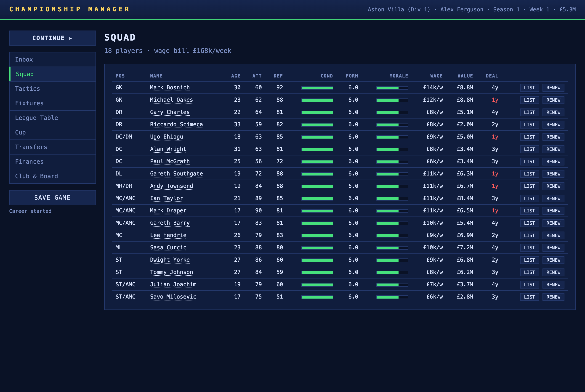
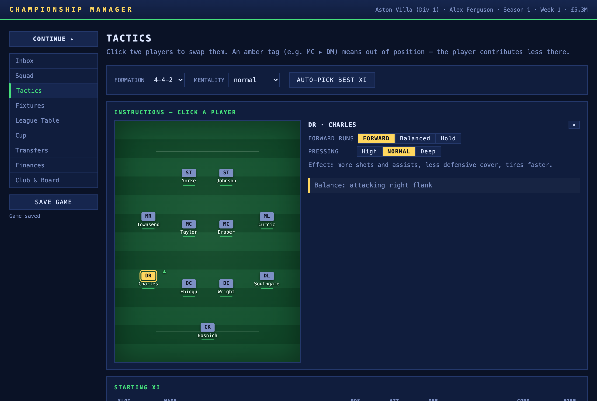
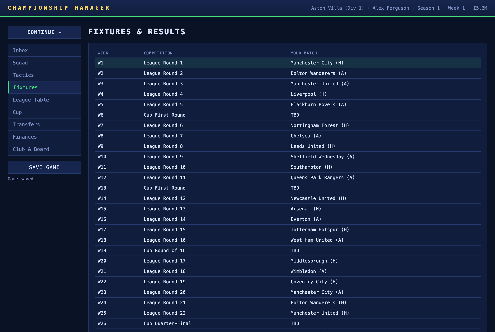
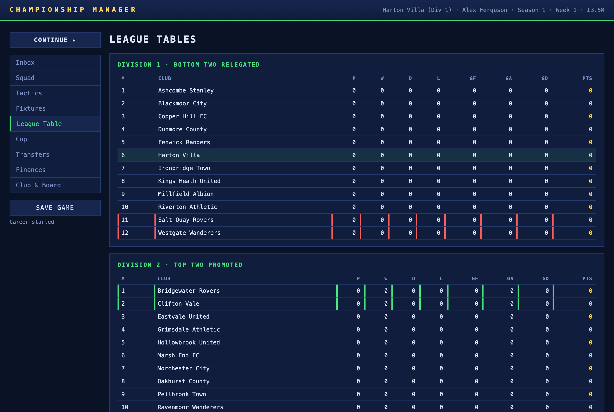
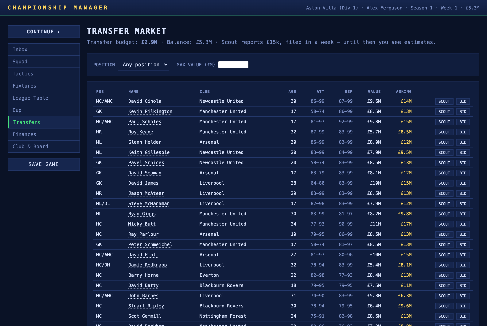
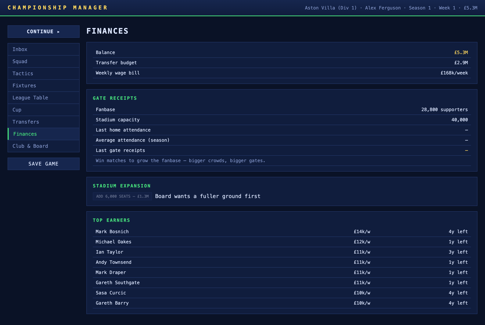
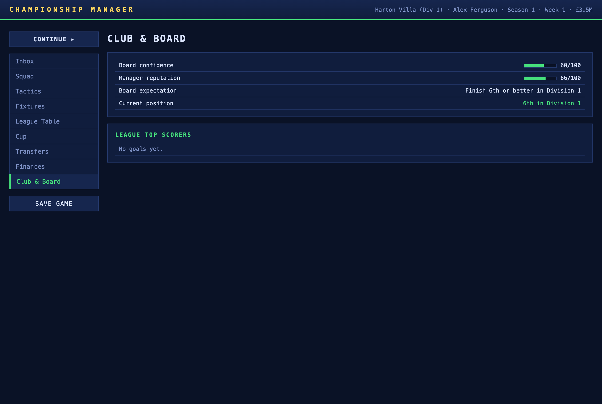
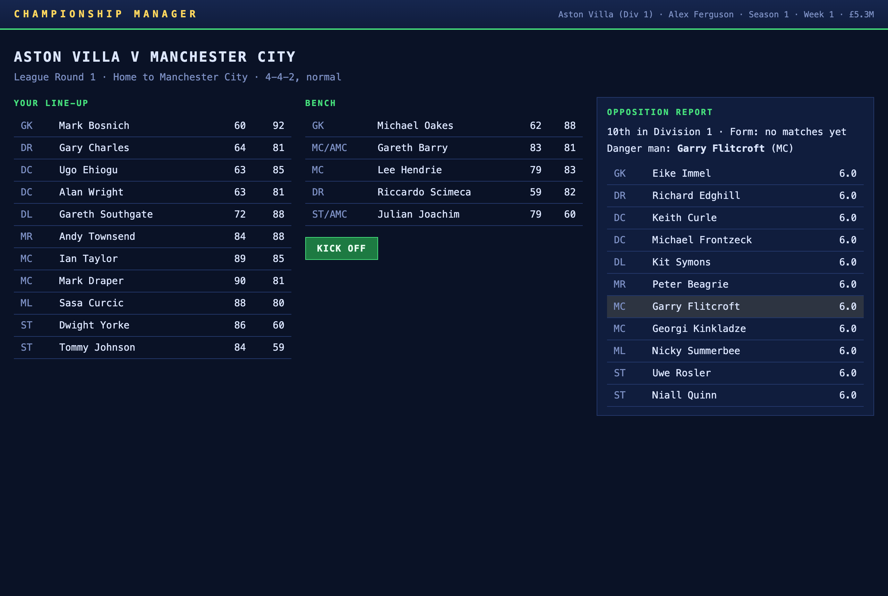
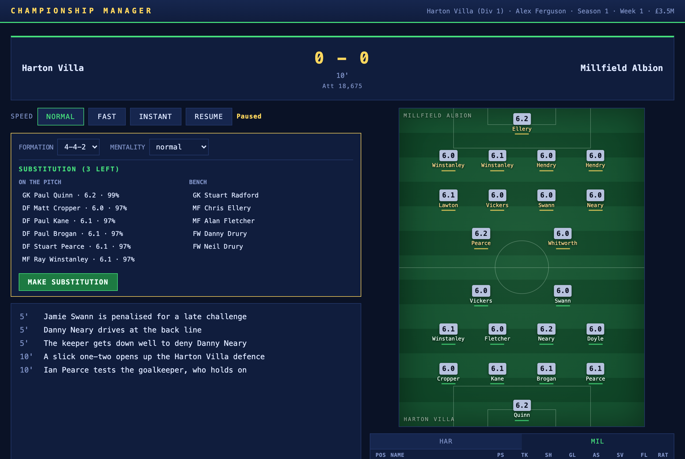
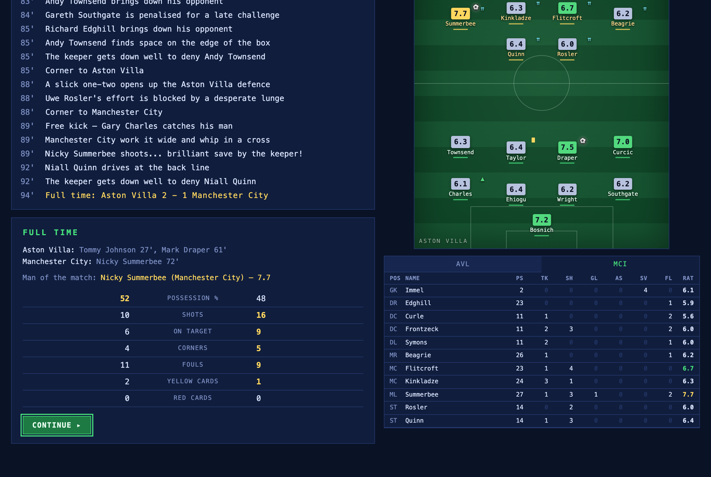

05b · Table Layouts Specification
Column-by-column layout spec for every table view in the application
The Champman UI is overwhelmingly tables — the CM genre lives in dense rows of
numbers. This document specifies, for each of the 14 table views, the exact columns, their
order, alignment, formatting, conditional styling, and interaction. It is the concrete
complement to 05 · UI Design, which covers screen flows and
design language at a higher level. Every spec below is grounded in
js/app.js and css/style.css.
1. Shared Table Vocabulary
Four CSS classes anchor the table system. They share a dense, monospace aesthetic:
4–5px cell padding, a --line bottom border per row, dim uppercase headers,
and right alignment for numeric columns (the first column and any .left
column are left-aligned).
| Class | Used for | Key CSS rules |
|---|---|---|
.team-table | Start-screen club selection | Hoverable rows; picked-user/picked-cpu row tints; first column appends " · YOU"/" · OPPONENT" |
.squad-table | Start inspector, pre-match XI/bench/opp | Lightweight; columns 3+ right-aligned; .pos dim; .empty placeholder |
.data-table | All hub screens (squad, tactics, fixtures, table, transfers, finances, club) | Right-aligned by default; .highlight, .zone-up/down, .good/bad/gold/dim cell colours; .clickable hover |
.player-table | Live match player statistics | table-layout: fixed; 11px font; column 2 = 31% width with ellipsis; rating colour bands; .dismissed line-through |
.stats-table | Full-time comparative stats | 3-column: home · label · away; leading side highlighted |
1.1 Reusable Cell Components
These helpers appear across many tables; they are defined once in app.js and
reused — so the spec references them rather than repeating their behaviour.
| Component | Definition | Where used |
|---|---|---|
| money(n) | ≥£10M → £XM (0dp); ≥£1M → £X.XM (1dp); ≥£1k → £Xk; else £n. Negative-prefixed. | Squad, Transfers, Finances, Club |
| bar(value, low=40, mid=65) | 70×8px inline bar. Fill = round(value)%. <low → red (.low); <mid → gold (.mid); else accent green. | Squad (cond, morale), Tactics (cond), Club (confidence, reputation) |
| statusTags(p) | Inline chips after a name: INJ n w (red), BAN n (gold), LISTED (grey). | Squad, Transfers |
| ratingBand(r) | <5.5 poor (red) · <6.5 ok (text) · <7.5 good (green) · else star (gold). | Match pitch chips, player table, full-time |
| surname(name) | Last token of the full name. Used where space is tight (pitch chips, player table). | Match day |
2. Start Screen Tables
2.1 Club Selection Table .team-table
The master list of all 24 clubs. Hovering a row fires the squad inspector (§2.2);
clicking starts a career. Rows are focusable (tabindex="0", Enter/Space activates).
| # | Header | Source | Align | Format |
|---|---|---|---|---|
| 1 | Club | team.name | left | Plain text; appends " · YOU" (green) or " · OPPONENT" (gold) on picked rows |
| 2 | Div | team.division | right | Div {n}, dim |
| 3 | GK | teamRatings(...).goalkeeping | right | Integer, dim |
| 4 | DEF | teamRatings(...).defense | right | Integer, dim |
| 5 | MID | teamRatings(...).midfield | right | Integer, dim |
| 6 | ATT | teamRatings(...).attack | right | Integer, dim |
| 7 | Overall | overallRating(team) | right | Integer, gold + bold |
| 8 | Board expects | team.expectation | right | Top {n}, dim |
Row styling. .picked-user green tint + "·YOU"; .picked-cpu gold tint + "·OPPONENT"; .dimmed 45% opacity (disabled). Hover/focus → --surface-2 background with accent outline.
2.2 Squad Inspector .squad-table
Right-hand panel on the start screen, populated on hover/focus of a club row. Columns 3+ are right-aligned.
| # | Header | Source | Format |
|---|---|---|---|
| 1 | Pos | p.pos | Dim (.pos) |
| 2 | Name | p.name | Left |
| 3 | Age | p.age | Right |
| 4 | Att | p.atk | Right |
| 5 | Def | p.def | Right |
Empty state: a single .empty cell "Hover a club to inspect its squad".
3. Hub Tables
3.1 Squad Roster .data-table
The full roster, sorted by position (GK→DF→MF→FW) then ability descending. A header line shows squad size and the weekly wage bill.
| # | Header | Source | Format / styling |
|---|---|---|---|
| 1 | Pos | p.pos | Right |
| 2 | Name (left) | p.name + statusTags(p) | Name; trailing chips: INJ n w (red), BAN n (gold), LISTED (grey) |
| 3 | Age | p.age | Right |
| 4 | Att | p.atk | Right |
| 5 | Def | p.def | Right |
| 6 | Cond | bar(p.condition) | 70×8px bar; <40 red, <65 gold, else green |
| 7 | Form | p.form.toFixed(1) | Right, 1 decimal |
| 8 | Morale | bar(p.morale) | 70×8px bar; same low/mid thresholds |
| 9 | Wage | money(p.wage) + /w | Right; £Xk/w |
| 10 | Value | money(p.value) | Right |
| 11 | Deal | p.contractYears + y | Right; red (.bad) when ≤1 |
| 12 | (actions) | — | List/Unlist + Renew mini-buttons |

3.2 Tactics — XI / Bench / Reserves .data-table
Three tables sharing one column structure. Rows are .clickable; click-to-swap
interaction (first click selects with gold .swap-selected, second click swaps).
The XI table adds an OOP tag (gold status-tag) when slot ≠ player.pos.
| # | Header | Source | Format / styling |
|---|---|---|---|
| 1 | Slot / SUB / — | XI: s.slot; Bench: SUB; Reserves: — | Right |
| 2 | Name (left) | p.name + OUT tag if unavailable + OOP tag (XI only, when out of position) | Left; unavailable → OUT red chip; OOP → gold chip |
| 3 | Pos | p.pos | Right |
| 4 | Att | p.atk | Right |
| 5 | Def | p.def | Right |
| 6 | Cond | bar(p.condition) | Bar (low/mid/green) |
| 7 | Form | p.form.toFixed(1) | Right, 1 decimal |
Empty bench/reserves show a single .dim "Empty" / "None" row.

3.3 Fixtures & Results .data-table
The whole season as one table; the current week row is .highlighted.
| # | Header | Source | Format / styling |
|---|---|---|---|
| 1 | Week | W{week+1} | Right |
| 2 | Competition (left) | League Round {n+1} or Cup {roundName} | Left |
| 3 | Your match (left) | Pairing or result | Left; opp (H|A) upcoming, home h-a away played, TBD / eliminated (dim) for cup |

3.4 League Tables .data-table
Two division tables side by side (your division first). Promotion/relegation zones use
inset left-edge box-shadows; your club row is .highlighted. Standard football
standings columns.
| # | Header | Source | Format / styling |
|---|---|---|---|
| 1 | # | i+1 (sort index) | Right |
| 2 | Club (left) | r.team | Left; your row tinted green |
| 3 | P | r.played | Right |
| 4 | W | r.won | Right |
| 5 | D | r.drawn | Right |
| 6 | L | r.lost | Right |
| 7 | GF | r.goalsFor | Right |
| 8 | GA | r.goalsAgainst | Right |
| 9 | GD | r.goalDiff | Right; + prefix if >0; .good green / .bad red |
| 10 | Pts | r.points | Right; gold (.gold) |
Division 1: the bottom 2 rows get .zone-down (red 3px inset left edge).
Division 2: the top 2 rows get .zone-up (green 3px inset left edge).
Each panel header notes the movement rule: "bottom two relegated" / "top two promoted".

3.5 Transfer Market .data-table
The richest hub table. Attribute cells are the key differentiator: exact (green) for own /
scouted players, a stable lo–hi range (dim) for everyone else. The header line
shows transfer budget (gold), balance, and the scout fee.
| # | Header | Source | Format / styling |
|---|---|---|---|
| 1 | Pos | r.player.pos | Right |
| 2 | Name (left) | r.player.name + statusTags | Left; INJ/BAN/LISTED chips |
| 3 | Club (left) | r.club or Free agent | Left; free agent in green (.good) |
| 4 | Age | r.player.age | Right |
| 5 | Att | attrDisplay(p,'atk') | Exact green (.good) if known; else lo–hi dim range |
| 6 | Def | attrDisplay(p,'def') | Same masking rule as Att |
| 7 | Value | money(r.player.value) | Right |
| 8 | Asking | money(r.asking) or — | Right; gold (.gold); "—" for free agents |
| 9 | (actions) | — | Scout (or ✓ / "scouting…") + Bid (or Sign for free agents) |
Counter-offers update the row's data-asking in place so a follow-up Bid
accepts at the countered price. Empty filter result: a dim "No players match." row spanning all columns.

3.6 Finances .data-table
Three small two-column label/value tables (plus the stadium-expansion panel and a top-earners table). All label columns are left-aligned.
3.6.1 Summary
| Label | Source | Format |
|---|---|---|
| Balance | club.balance | money(), gold |
| Transfer budget | club.transferBudget | money() |
| Weekly wage bill | Σ p.wage | money()/week; red if wageBill × 30 > balance |
3.6.2 Gate receipts
| Label | Source | Format |
|---|---|---|
| Fanbase | club.fanbase | {n} supporters (toLocaleString) |
| Stadium capacity | club.capacity | toLocaleString |
| Last home attendance | club.lastAttendance | toLocaleString or — |
| Average attendance (season) | attendanceSum/N | rounded, toLocaleString or — |
| Last gate receipts | lastAttendance × 14 | money(), gold; or — |
3.6.3 Top earners
| # | Col | Source | Format |
|---|---|---|---|
| 1 | Name (left) | p.name | Left |
| 2 | Wage | p.wage | money()/w |
| 3 | Deal | p.contractYears | {n}y left |
Top 8 by wage. The expansion panel is not a table — it's a build quote or progress line with a disabled button + reason when blocked.

3.7 Club & Board .data-table
3.7.1 Board summary (label/value)
| Label | Source | Format |
|---|---|---|
| Board confidence | board.confidence | bar(conf, 30, 55) + {n}/100 |
| Manager reputation | reputation | bar(rep, 30, 55) + {n}/100 |
| Board expectation | club.expectation | Finish {ordinal} or better in Division {n} |
| Current position | leaguePosition() | {ordinal} in Division {n}; .good green if ≤ expectation else .bad red |
3.7.2 League top scorers
| # | Col | Source | Format |
|---|---|---|---|
| 1 | Name (left) | player name | Left |
| 2 | Club (left, dim) | club name | Left, dim |
| 3 | Goals | s.goals | {n} goals |
| 4 | Apps | s.apps | {n} apps |
| 5 | Avg | ratingSum/ratingN | {n.n} avg |
Top 10 by goals (only players with goals > 0). Empty: "No goals yet."
3.7.3 Past seasons (history)
| # | Header | Source | Format |
|---|---|---|---|
| 1 | Season | h.season+1 | Right |
| 2 | Champions (left) | h.champion | Left |
| 3 | Cup (left) | h.cupWinner | Left; — if none |
| 4 | You | h.userPosition | {ordinal} + (D{n}) |
| 5 | Top scorer (left) | h.topScorer | Left; {name} ({goals}) or — |
Only shown once at least one season is complete. A poach-offer panel (Accept/Decline)
may appear above the summary when pendingJobOffer is set.

4. Match-Day Tables
4.1 Pre-Match — XI, Bench, Opposition XI .squad-table
Three lightweight tables in a 3-column page layout. The opposition XI highlights the
danger man with a gold-tinted .highlight row.
| Table | Columns | Notes |
|---|---|---|
| Your line-up | Slot · Name · Att · Def | slot dim; attributes right-aligned |
| Bench | Pos · Name · Att · Def | Empty bench → "Empty bench" cell |
| Opposition XI | Slot · Name · Form | Danger-man row gold-tinted; form.toFixed(1) |
The opposition report above the XI table is prose (position, form guide with colour- coded W/D/L spans, danger man in gold) — not a table.

4.2 Live Player Statistics .player-table
The only table using table-layout: fixed (so column widths are stable as
ratings tick). Tabbed home/away; only rows with minutes > 0 || started show.
Substitutes append a dim "(s)".
| # | Header | Source | Width / format |
|---|---|---|---|
| 1 | Pos | l.slot | 34px, left, dim |
| 2 | Name | surname(l.name) | 31%, left, ellipsis; "(s)" if sub |
| 3 | Ps (Passes) | l.passes | Right; .zero (dim line colour) if 0 |
| 4 | Tk (Tackles) | l.tackles | Right; zero-dim |
| 5 | Sh (Shots) | l.shots | Right; zero-dim |
| 6 | Gl (Goals) | l.goals | Right; zero-dim |
| 7 | As (Assists) | l.assists | Right; zero-dim |
| 8 | Sv (Saves) | l.saves | Right; zero-dim |
| 9 | Fl (Fouls) | l.fouls | Right; zero-dim |
| 10 | Rat (Rating) | l.rating.toFixed(1) | Right, bold; colour band: poor red / ok text / good green / star gold |
Headers carry title tooltips for the abbreviations. Sent-off players get
.dismissed (45% opacity + line-through). The tab buttons show each side's
shortName.

4.3 Full-Time Comparative Stats .stats-table
A symmetrical 3-column table: home value (right) · label (centre, dim uppercase) · away
value (left). For "bad" stats (fouls, yellow, red cards) the lower side leads; for
all others the higher side leads. The leading side's value is gold + bold
(.leading).
| Label | Key | Leading rule |
|---|---|---|
| Possession % | possession | higher leads |
| Shots | shots | higher leads |
| On target | onTarget | higher leads |
| Corners | corners | higher leads |
| Fouls | fouls | lower leads |
| Yellow cards | yellowCards | lower leads |
| Red cards | redCards | lower leads |
Above the table: scorers (with minutes) per side and the man of the match (gold). Below: the primary Continue ▸ button.

4.4 Week Summary — Top Six .data-table
A compact standings snapshot shown after advancing a week.
| # | Col | Source | Format |
|---|---|---|---|
| 1 | # | i+1 | Right |
| 2 | Club (left) | r.team | Left; your row green-tinted |
| 3 | P | r.played | Right |
| 4 | Pts | r.points | Right; gold |
Your division's top 6 only. Above it, the week's results are grouped by competition and division as prose lines (your matches gold-tinted).
5. Interaction Summary Across Tables
| Table | Row interaction | Inline actions |
|---|---|---|
| Club selection | Click = start career; hover/focus = inspect squad | — |
| Squad | — | List/Unlist, Renew (per row) |
| Tactics XI/Bench/Reserves | Click-to-swap (select then swap) | — |
| Fixtures | — (current week highlighted) | — |
| League table | — (your row + zones highlighted) | — |
| Transfers | — (clickable rows not used here) | Scout, Bid/Sign (per row) |
| Player stats (match) | Tab switch (home/away) | — |
| Inbox (non-table) | — | Accept/Reject on offer items |
6. Formatting Reference
| Value | Formatter | Examples |
|---|---|---|
| Money | money(n) | £18k, £1.2M, £12M, -£3k |
| Ordinal | ordinal(n) | 1st, 2nd, 12th |
| Bar fill | bar(value,low,mid) | width = round(value)%; red <40, gold <65, green ≥65 (defaults) |
| Rating band | ratingBand(r) | poor <5.5, ok <6.5, good <7.5, star ≥7.5 |
| Attribute (masked) | attrDisplay(p,attr) | exact 74 (green) or range 66–74 (dim) |
| Status tag | statusTags(p) | INJ 3w, BAN 1, LISTED |